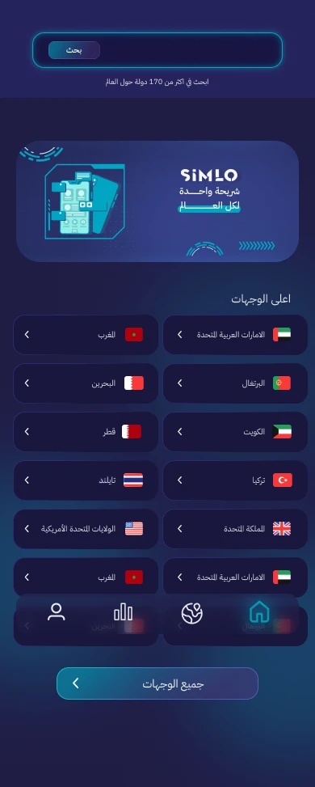
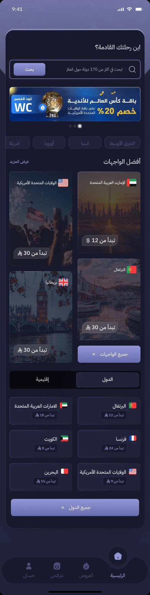
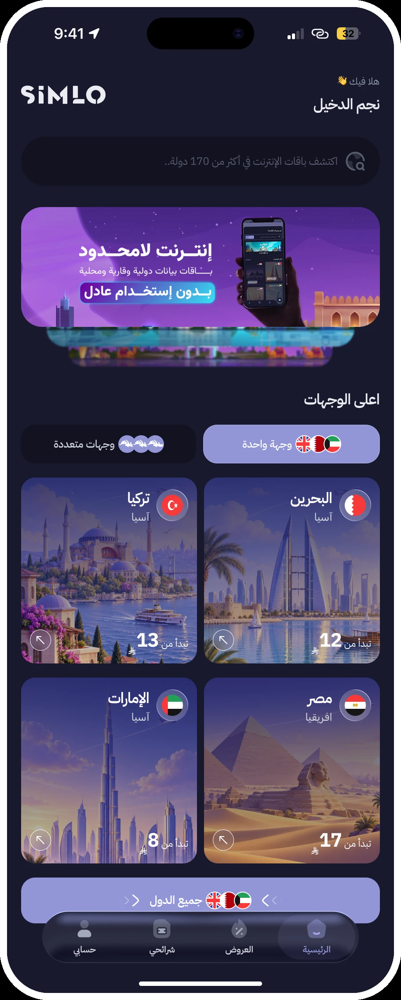

Support different trips
Single-country and multi-destination packages have separate browsing paths, while keeping their package details consistent.
eSIM · Mobile app
Buying, installing, and managing an eSIM in one place.
v2.0 redesign · In development

01 / CONTEXT
Simlo is a travel connectivity product. I designed the mobile app across two redesigns, covering destination discovery, package purchase, installation, and SIM management.
02 / MY WORK
03 / DESIGN DECISIONS
Single-country and multi-destination packages have separate browsing paths, while keeping their package details consistent.
Installation instructions sit alongside SIM details. The interface gives users a route from purchase to setup rather than leaving the order as the end point.
DESIGN EVOLUTION
The original interface, the first redesign, and the latest direction. Open any screen to view it at full size.



04 / DELIVERY
Simlo is available on the App Store. The v2.0 redesign shown here is complete on the design side and is currently being implemented by the development team.
View on App Store